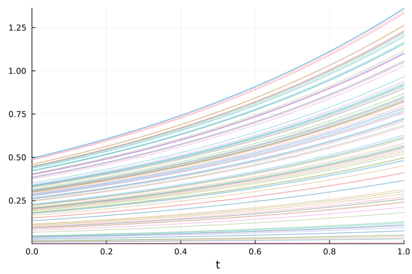
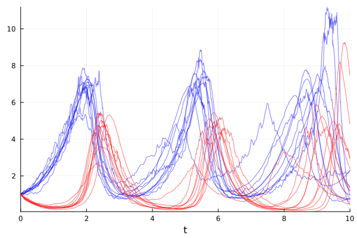
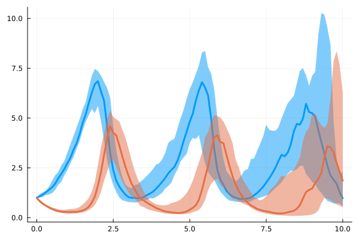
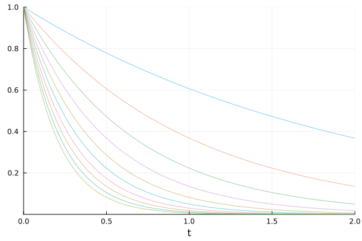

Parallel Ensemble Simulations#
Docs: https://diffeq.sciml.ai/stable/features/ensemble/
Solving an ODE With Different Initial Conditions#
Solving \(\dot{u} = 1.01u\) with \(u(0)=0.5\) and \(t \in [0, 1]\) with multiple initial conditions.
using OrdinaryDiffEq
using Plots
Linear ODE which starts at 0.5 and solves from t=0.0 to t=1.0
prob = ODEProblem((u, p, t) -> 1.01u, 0.5, (0.0, 1.0))
ODEProblem with uType Float64 and tType Float64. In-place: false
Non-trivial mass matrix: false
timespan: (0.0, 1.0)
u0: 0.5
Define a new problem for each trajectory using remake()
The initial conditions (u0) are changed in this example
function prob_func(prob, i, repeat)
remake(prob, u0=rand() * prob.u0)
end
prob_func (generic function with 1 method)
The function could also capture the necessary data outside.
initial_conditions = range(0, stop=1, length=100)
function prob_func(prob, i, repeat)
remake(prob, u0=initial_conditions[i])
end
Define an ensemble problem
ensemble_prob = EnsembleProblem(prob; prob_func=prob_func)
EnsembleProblem with problem ODEProblem
Ensemble simulations are solved by multithreading by default
sim = solve(ensemble_prob, trajectories=100)
EnsembleSolution Solution of length 100 with uType:
SciMLBase.ODESolution{Float64, 1, Vector{Float64}, Nothing, Nothing, Vector{Float64}, Vector{Vector{Float64}}, Nothing, SciMLBase.ODEProblem{Float64, Tuple{Float64, Float64}, false, SciMLBase.NullParameters, SciMLBase.ODEFunction{false, SciMLBase.AutoSpecialize, Main.var"##226".var"#1#2", LinearAlgebra.UniformScaling{Bool}, Nothing, Nothing, Nothing, Nothing, Nothing, Nothing, Nothing, Nothing, Nothing, Nothing, Nothing, typeof(SciMLBase.DEFAULT_OBSERVED), Nothing, Nothing, Nothing, Nothing}, Base.Pairs{Symbol, Union{}, Tuple{}, @NamedTuple{}}, SciMLBase.StandardODEProblem}, OrdinaryDiffEqCore.CompositeAlgorithm{0, Tuple{OrdinaryDiffEqTsit5.Tsit5{typeof(OrdinaryDiffEqCore.trivial_limiter!), typeof(OrdinaryDiffEqCore.trivial_limiter!), Static.False}, OrdinaryDiffEqVerner.Vern7{typeof(OrdinaryDiffEqCore.trivial_limiter!), typeof(OrdinaryDiffEqCore.trivial_limiter!), Static.False}, OrdinaryDiffEqRosenbrock.Rosenbrock23{0, ADTypes.AutoFiniteDiff{Val{:forward}, Val{:forward}, Val{:hcentral}, Nothing, Nothing, Bool}, Nothing, typeof(OrdinaryDiffEqCore.DEFAULT_PRECS), Val{:forward}(), true, nothing, typeof(OrdinaryDiffEqCore.trivial_limiter!), typeof(OrdinaryDiffEqCore.trivial_limiter!)}, OrdinaryDiffEqRosenbrock.Rodas5P{0, ADTypes.AutoFiniteDiff{Val{:forward}, Val{:forward}, Val{:hcentral}, Nothing, Nothing, Bool}, Nothing, typeof(OrdinaryDiffEqCore.DEFAULT_PRECS), Val{:forward}(), true, nothing, typeof(OrdinaryDiffEqCore.trivial_limiter!), typeof(OrdinaryDiffEqCore.trivial_limiter!)}, OrdinaryDiffEqBDF.FBDF{5, 0, ADTypes.AutoFiniteDiff{Val{:forward}, Val{:forward}, Val{:hcentral}, Nothing, Nothing, Bool}, Nothing, OrdinaryDiffEqNonlinearSolve.NLNewton{Rational{Int64}, Rational{Int64}, Rational{Int64}, Rational{Int64}}, typeof(OrdinaryDiffEqCore.DEFAULT_PRECS), Val{:forward}(), true, nothing, Nothing, Nothing, typeof(OrdinaryDiffEqCore.trivial_limiter!)}, OrdinaryDiffEqBDF.FBDF{5, 0, ADTypes.AutoFiniteDiff{Val{:forward}, Val{:forward}, Val{:hcentral}, Nothing, Nothing, Bool}, LinearSolve.KrylovJL{typeof(Krylov.gmres!), Int64, Nothing, Tuple{}, Base.Pairs{Symbol, Union{}, Tuple{}, @NamedTuple{}}}, OrdinaryDiffEqNonlinearSolve.NLNewton{Rational{Int64}, Rational{Int64}, Rational{Int64}, Rational{Int64}}, typeof(OrdinaryDiffEqCore.DEFAULT_PRECS), Val{:forward}(), true, nothing, Nothing, Nothing, typeof(OrdinaryDiffEqCore.trivial_limiter!)}}, OrdinaryDiffEqCore.AutoSwitchCache{Tuple{OrdinaryDiffEqTsit5.Tsit5{typeof(OrdinaryDiffEqCore.trivial_limiter!), typeof(OrdinaryDiffEqCore.trivial_limiter!), Static.False}, OrdinaryDiffEqVerner.Vern7{typeof(OrdinaryDiffEqCore.trivial_limiter!), typeof(OrdinaryDiffEqCore.trivial_limiter!), Static.False}}, Tuple{OrdinaryDiffEqRosenbrock.Rosenbrock23{0, ADTypes.AutoFiniteDiff{Val{:forward}, Val{:forward}, Val{:hcentral}, Nothing, Nothing, Bool}, Nothing, typeof(OrdinaryDiffEqCore.DEFAULT_PRECS), Val{:forward}(), true, nothing, typeof(OrdinaryDiffEqCore.trivial_limiter!), typeof(OrdinaryDiffEqCore.trivial_limiter!)}, OrdinaryDiffEqRosenbrock.Rodas5P{0, ADTypes.AutoFiniteDiff{Val{:forward}, Val{:forward}, Val{:hcentral}, Nothing, Nothing, Bool}, Nothing, typeof(OrdinaryDiffEqCore.DEFAULT_PRECS), Val{:forward}(), true, nothing, typeof(OrdinaryDiffEqCore.trivial_limiter!), typeof(OrdinaryDiffEqCore.trivial_limiter!)}, OrdinaryDiffEqBDF.FBDF{5, 0, ADTypes.AutoFiniteDiff{Val{:forward}, Val{:forward}, Val{:hcentral}, Nothing, Nothing, Bool}, Nothing, OrdinaryDiffEqNonlinearSolve.NLNewton{Rational{Int64}, Rational{Int64}, Rational{Int64}, Rational{Int64}}, typeof(OrdinaryDiffEqCore.DEFAULT_PRECS), Val{:forward}(), true, nothing, Nothing, Nothing, typeof(OrdinaryDiffEqCore.trivial_limiter!)}, OrdinaryDiffEqBDF.FBDF{5, 0, ADTypes.AutoFiniteDiff{Val{:forward}, Val{:forward}, Val{:hcentral}, Nothing, Nothing, Bool}, LinearSolve.KrylovJL{typeof(Krylov.gmres!), Int64, Nothing, Tuple{}, Base.Pairs{Symbol, Union{}, Tuple{}, @NamedTuple{}}}, OrdinaryDiffEqNonlinearSolve.NLNewton{Rational{Int64}, Rational{Int64}, Rational{Int64}, Rational{Int64}}, typeof(OrdinaryDiffEqCore.DEFAULT_PRECS), Val{:forward}(), true, nothing, Nothing, Nothing, typeof(OrdinaryDiffEqCore.trivial_limiter!)}}, Rational{Int64}, Int64}}, OrdinaryDiffEqCore.InterpolationData{SciMLBase.ODEFunction{false, SciMLBase.AutoSpecialize, Main.var"##226".var"#1#2", LinearAlgebra.UniformScaling{Bool}, Nothing, Nothing, Nothing, Nothing, Nothing, Nothing, Nothing, Nothing, Nothing, Nothing, Nothing, typeof(SciMLBase.DEFAULT_OBSERVED), Nothing, Nothing, Nothing, Nothing}, Vector{Float64}, Vector{Float64}, Vector{Vector{Float64}}, Vector{Int64}, OrdinaryDiffEqCore.DefaultCache{OrdinaryDiffEqTsit5.Tsit5ConstantCache, OrdinaryDiffEqVerner.Vern7ConstantCache, OrdinaryDiffEqRosenbrock.Rosenbrock23ConstantCache{Float64, SciMLBase.TimeDerivativeWrapper{false, SciMLBase.ODEFunction{false, SciMLBase.AutoSpecialize, Main.var"##226".var"#1#2", LinearAlgebra.UniformScaling{Bool}, Nothing, Nothing, Nothing, Nothing, Nothing, Nothing, Nothing, Nothing, Nothing, Nothing, Nothing, typeof(SciMLBase.DEFAULT_OBSERVED), Nothing, Nothing, Nothing, Nothing}, Float64, SciMLBase.NullParameters}, SciMLBase.UDerivativeWrapper{false, SciMLBase.ODEFunction{false, SciMLBase.AutoSpecialize, Main.var"##226".var"#1#2", LinearAlgebra.UniformScaling{Bool}, Nothing, Nothing, Nothing, Nothing, Nothing, Nothing, Nothing, Nothing, Nothing, Nothing, Nothing, typeof(SciMLBase.DEFAULT_OBSERVED), Nothing, Nothing, Nothing, Nothing}, Float64, SciMLBase.NullParameters}, Float64, Float64, Nothing, ADTypes.AutoFiniteDiff{Val{:forward}, Val{:forward}, Val{:hcentral}, Nothing, Nothing, Bool}}, OrdinaryDiffEqRosenbrock.RosenbrockCombinedConstantCache{SciMLBase.TimeDerivativeWrapper{false, SciMLBase.ODEFunction{false, SciMLBase.AutoSpecialize, Main.var"##226".var"#1#2", LinearAlgebra.UniformScaling{Bool}, Nothing, Nothing, Nothing, Nothing, Nothing, Nothing, Nothing, Nothing, Nothing, Nothing, Nothing, typeof(SciMLBase.DEFAULT_OBSERVED), Nothing, Nothing, Nothing, Nothing}, Float64, SciMLBase.NullParameters}, SciMLBase.UDerivativeWrapper{false, SciMLBase.ODEFunction{false, SciMLBase.AutoSpecialize, Main.var"##226".var"#1#2", LinearAlgebra.UniformScaling{Bool}, Nothing, Nothing, Nothing, Nothing, Nothing, Nothing, Nothing, Nothing, Nothing, Nothing, Nothing, typeof(SciMLBase.DEFAULT_OBSERVED), Nothing, Nothing, Nothing, Nothing}, Float64, SciMLBase.NullParameters}, OrdinaryDiffEqRosenbrock.RodasTableau{Float64, Float64}, Float64, Float64, Nothing, ADTypes.AutoFiniteDiff{Val{:forward}, Val{:forward}, Val{:hcentral}, Nothing, Nothing, Bool}}, OrdinaryDiffEqBDF.FBDFConstantCache{5, N, Vector{Float64}, Float64, Matrix{Float64}, Matrix{Float64}, StaticArraysCore.SMatrix{5, 6, Rational{Int64}, 30}, Float64, Vector{Float64}, Vector{Float64}} where N<:(OrdinaryDiffEqNonlinearSolve.NLSolver{OrdinaryDiffEqNonlinearSolve.NLNewton{Rational{Int64}, Rational{Int64}, Rational{Int64}, Rational{Int64}}, false, Float64, _A, Nothing, Float64, OrdinaryDiffEqNonlinearSolve.NLNewtonConstantCache{tType, tType2, J, W, ufType}, Float64} where {_A, tType, tType2, J, W, ufType}), OrdinaryDiffEqBDF.FBDFConstantCache{5, N, Vector{Float64}, Float64, Matrix{Float64}, Matrix{Float64}, StaticArraysCore.SMatrix{5, 6, Rational{Int64}, 30}, Float64, Vector{Float64}, Vector{Float64}} where N<:(OrdinaryDiffEqNonlinearSolve.NLSolver{OrdinaryDiffEqNonlinearSolve.NLNewton{Rational{Int64}, Rational{Int64}, Rational{Int64}, Rational{Int64}}, false, Float64, _A, Nothing, Float64, OrdinaryDiffEqNonlinearSolve.NLNewtonConstantCache{tType, tType2, J, W, ufType}, Float64} where {_A, tType, tType2, J, W, ufType}), Tuple{Float64, Float64, DataType, DataType, DataType, Float64, Float64, SciMLBase.ODEFunction{false, SciMLBase.AutoSpecialize, Main.var"##226".var"#1#2", LinearAlgebra.UniformScaling{Bool}, Nothing, Nothing, Nothing, Nothing, Nothing, Nothing, Nothing, Nothing, Nothing, Nothing, Nothing, typeof(SciMLBase.DEFAULT_OBSERVED), Nothing, Nothing, Nothing, Nothing}, Float64, Float64, Float64, SciMLBase.NullParameters, Bool, Val{false}}, OrdinaryDiffEqCore.AutoSwitchCache{Tuple{OrdinaryDiffEqTsit5.Tsit5{typeof(OrdinaryDiffEqCore.trivial_limiter!), typeof(OrdinaryDiffEqCore.trivial_limiter!), Static.False}, OrdinaryDiffEqVerner.Vern7{typeof(OrdinaryDiffEqCore.trivial_limiter!), typeof(OrdinaryDiffEqCore.trivial_limiter!), Static.False}}, Tuple{OrdinaryDiffEqRosenbrock.Rosenbrock23{0, ADTypes.AutoFiniteDiff{Val{:forward}, Val{:forward}, Val{:hcentral}, Nothing, Nothing, Bool}, Nothing, typeof(OrdinaryDiffEqCore.DEFAULT_PRECS), Val{:forward}(), true, nothing, typeof(OrdinaryDiffEqCore.trivial_limiter!), typeof(OrdinaryDiffEqCore.trivial_limiter!)}, OrdinaryDiffEqRosenbrock.Rodas5P{0, ADTypes.AutoFiniteDiff{Val{:forward}, Val{:forward}, Val{:hcentral}, Nothing, Nothing, Bool}, Nothing, typeof(OrdinaryDiffEqCore.DEFAULT_PRECS), Val{:forward}(), true, nothing, typeof(OrdinaryDiffEqCore.trivial_limiter!), typeof(OrdinaryDiffEqCore.trivial_limiter!)}, OrdinaryDiffEqBDF.FBDF{5, 0, ADTypes.AutoFiniteDiff{Val{:forward}, Val{:forward}, Val{:hcentral}, Nothing, Nothing, Bool}, Nothing, OrdinaryDiffEqNonlinearSolve.NLNewton{Rational{Int64}, Rational{Int64}, Rational{Int64}, Rational{Int64}}, typeof(OrdinaryDiffEqCore.DEFAULT_PRECS), Val{:forward}(), true, nothing, Nothing, Nothing, typeof(OrdinaryDiffEqCore.trivial_limiter!)}, OrdinaryDiffEqBDF.FBDF{5, 0, ADTypes.AutoFiniteDiff{Val{:forward}, Val{:forward}, Val{:hcentral}, Nothing, Nothing, Bool}, LinearSolve.KrylovJL{typeof(Krylov.gmres!), Int64, Nothing, Tuple{}, Base.Pairs{Symbol, Union{}, Tuple{}, @NamedTuple{}}}, OrdinaryDiffEqNonlinearSolve.NLNewton{Rational{Int64}, Rational{Int64}, Rational{Int64}, Rational{Int64}}, typeof(OrdinaryDiffEqCore.DEFAULT_PRECS), Val{:forward}(), true, nothing, Nothing, Nothing, typeof(OrdinaryDiffEqCore.trivial_limiter!)}}, Rational{Int64}, Int64}, Float64}, Nothing}, SciMLBase.DEStats, Vector{Int64}, Nothing, Nothing, Nothing}
Each element in the results is an ODE solution
sim[1]
retcode: Success
Interpolation: 3rd order Hermite
t: 5-element Vector{Float64}:
0.0
0.09967212821284054
0.345801443106443
0.6778724453348411
1.0
u: 5-element Vector{Float64}:
0.2868451772838295
0.3172250528065665
0.40675135378657623
0.5688369058349011
0.7875623717233003
You can plot all the results at once
plot(sim, linealpha=0.4)

Solving an SDE with Different Parameters#
using StochasticDiffEq
using Plots
function lotka_volterra!(du, u, p, t)
du[1] = p[1] * u[1] - p[2] * u[1] * u[2]
du[2] = -3 * u[2] + u[1] * u[2]
end
function g!(du, u, p, t)
du[1] = p[3] * u[1]
du[2] = p[4] * u[2]
end
p = [1.5, 1.0, 0.1, 0.1]
prob = SDEProblem(lotka_volterra!, g!, [1.0, 1.0], (0.0, 10.0), p)
SDEProblem with uType Vector{Float64} and tType Float64. In-place: true
Non-trivial mass matrix: false
timespan: (0.0, 10.0)
u0: 2-element Vector{Float64}:
1.0
1.0
function prob_func(prob, i, repeat)
x = 0.3 * rand(2)
remake(prob, p=[p[1:2]; x])
end
ensemble_prob = EnsembleProblem(prob, prob_func=prob_func)
sim = solve(ensemble_prob, SRIW1(), trajectories=10)
plot(sim, linealpha=0.5, color=:blue, idxs=(0, 1))
plot!(sim, linealpha=0.5, color=:red, idxs=(0, 2))

Show the distribution of the ensemble solutions
summ = EnsembleSummary(sim, 0:0.1:10)
plot(summ, fillalpha=0.5)

Ensemble simulations of Modelingtoolkit (MTK) models#
Radioactive decay example
using ModelingToolkit
using OrdinaryDiffEq
using Plots
@independent_variables t
@variables c(t) = 1.0
@parameters λ = 1.0
D = Differential(t)
@mtkbuild sys = ODESystem([D(c) ~ -λ * c], t)
prob = ODEProblem(sys, [], (0.0, 2.0), []);
solve(prob)
retcode: Success
Interpolation: 3rd order Hermite
t: 8-element Vector{Float64}:
0.0
0.10001999200479662
0.34208427066999536
0.6553980136343391
1.0312652525315806
1.4709405856363595
1.9659576669700232
2.0
u: 8-element Vector{Vector{Float64}}:
[1.0]
[0.9048193287657775]
[0.7102883621328676]
[0.5192354400036404]
[0.35655576576996556]
[0.2297097907863828]
[0.14002247272452764]
[0.1353360028400881]
Use the symbolic interface to change the parameter(s).
function changemtkparam(prob, i, repeat)
# Make a new copy of the parameter vector
# Ensure the changed will not affect the original ODE problem
remake(prob, p=[λ => i * 0.5])
end
eprob = EnsembleProblem(prob, prob_func=changemtkparam)
sim = solve(eprob, trajectories=10)
plot(sim, linealpha=0.5)

This notebook was generated using Literate.jl.